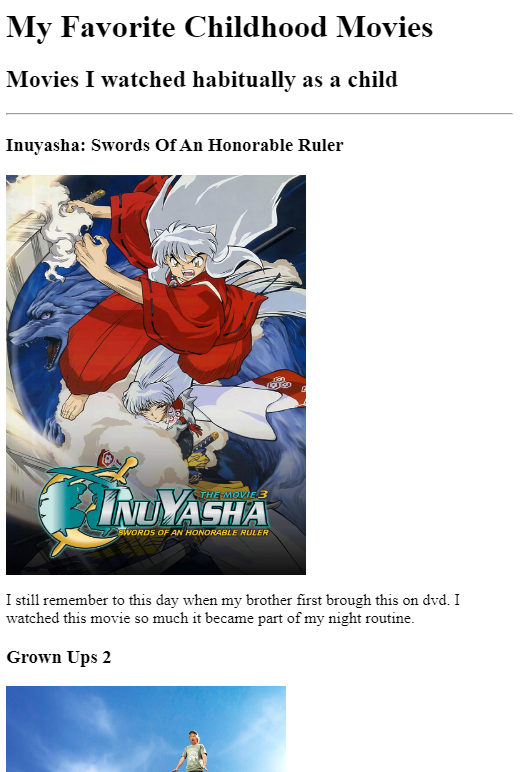

Najzon's Websites Porfolio
I am a aspiring software engineer
Down below I'll be showing off my skills I have cultivating over the past years with website links and screenshot previews
Ranking My Childhood Movies

Custom Birthday Invite
About Me
Contact Me